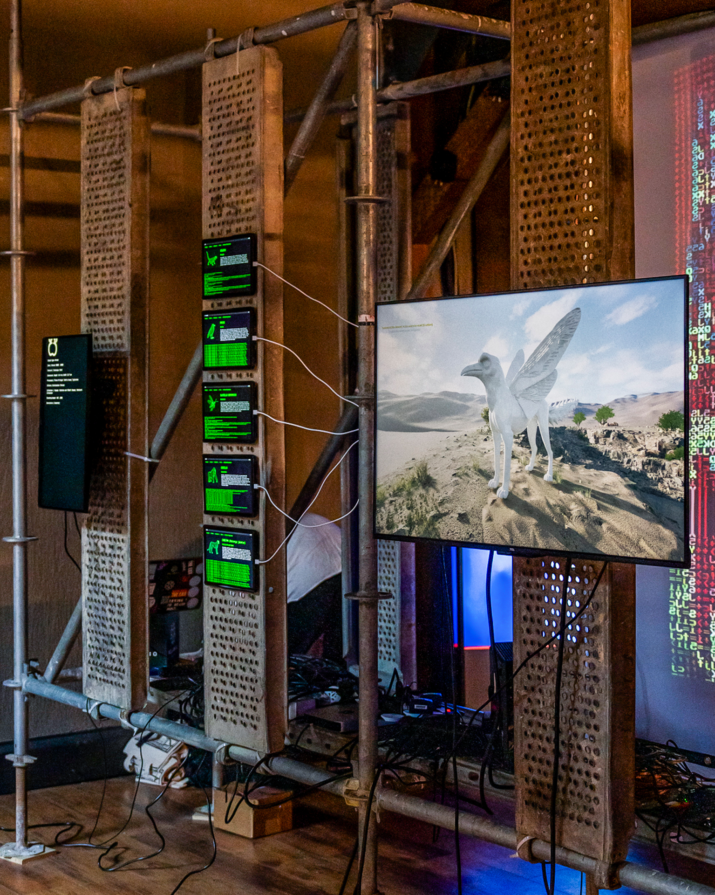
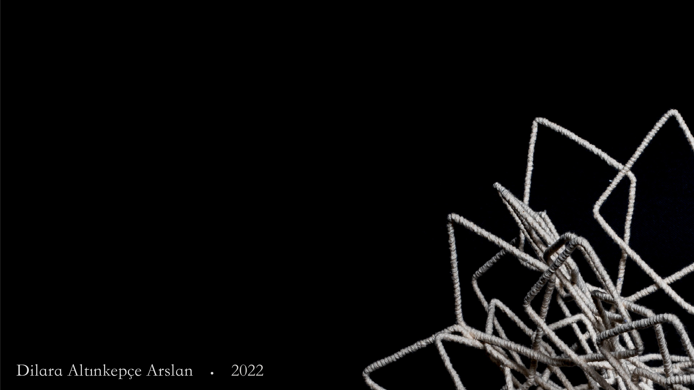
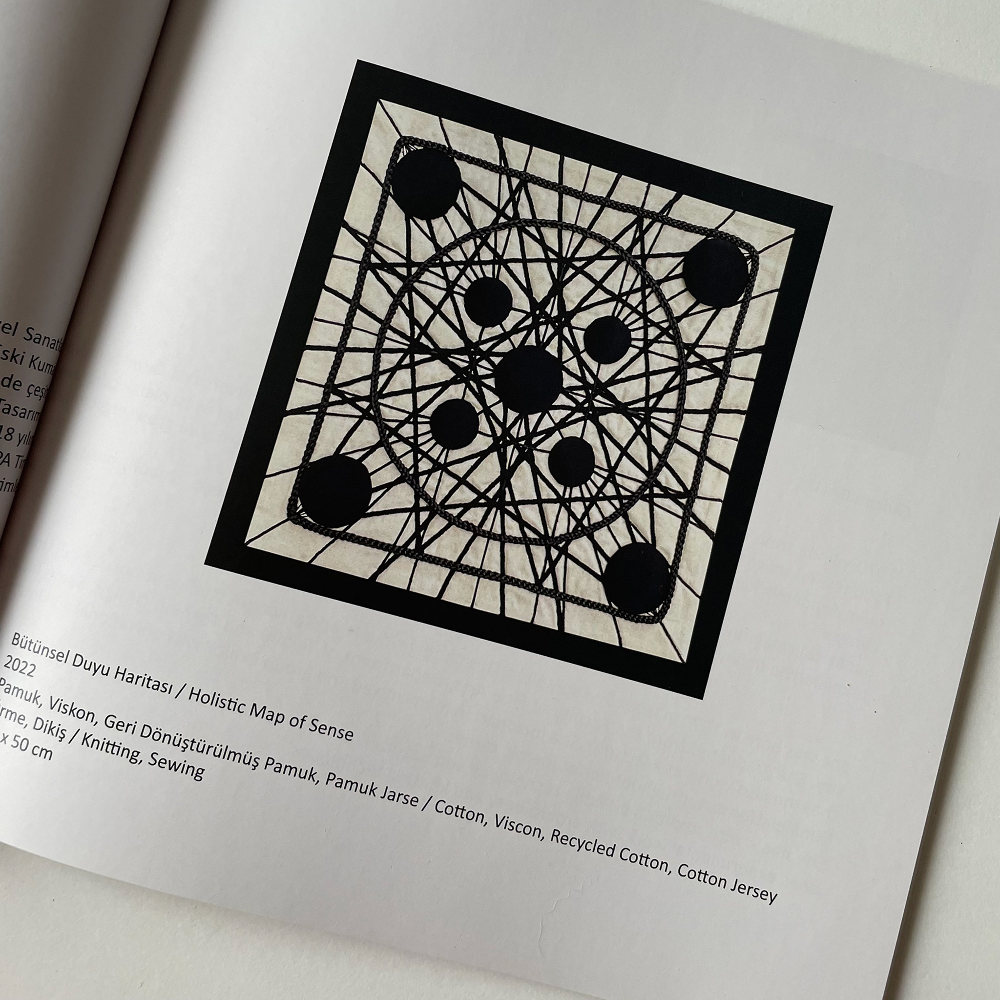

Art Fairs

2025 | Bomontiada, Istanbul
Noise Media Art: "ALARM"
Featuring the highly acclaimed "Modern Age Griffin" project, symbolizing the intersection of humanity's environmental crisis, drought, and radiation through a contemporary lens.

2024 & 2023 | Istanbul
Baselected Curations
Selected among the top emerging contemporary artists in Turkey for two consecutive years, exhibiting works like "Tunnel of Time" and "The Grand Ritual".

2025 | Taksim Sanat, Istanbul
Artweeks XII
A comprehensive showcase of new fiber installations and experimental textile approaches.
Awards

2025 | Akbank Sanat, Istanbul
43rd Contemporary Artists Award
Accepted to the prestigious 43rd Contemporary Artists Exhibition organized by Akbank Sanat and the Painting and Sculpture Museums Association, featuring the "Shaman Village" artwork.
Biennials

Edirne, Turkey
Edirne Biennial
Site-specific installation featuring the "Budun" artwork, exploring deep-rooted cultural memory within the historical context of the city.

2022 | TAP & WTA
WTA 10th World Textile Art Biennial
Exhibited "Holistic Map of Sense" at the 25th-anniversary celebration of the World Textile Art Biennial in Istanbul/Barcelona.